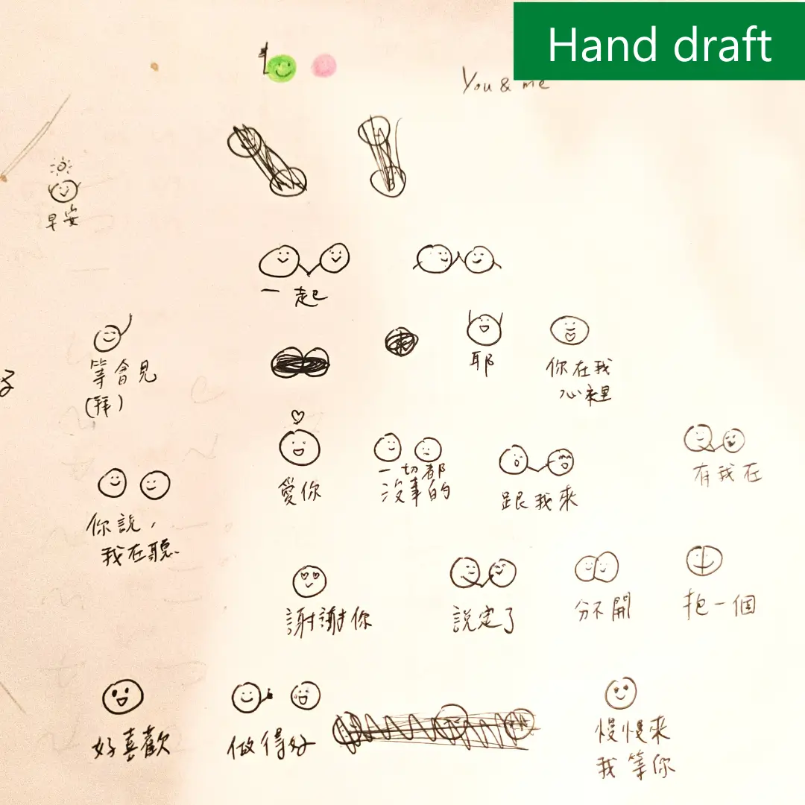

Chat Stickers
Currently the Pinky & Yolky chat stickers are available for the LINE app, with a Traditional Chinese and an English version.
Check stickers on the shelfEmojis
More emojis to be released. Stay tuned!
Story Behind
Pinky & Yolky's birth was a beautiful accident. My friends encouraged me to design chat stickers for the popular communication app LINE. I ended up sketching two ball-shaped characters on paper who have a loving bond, and I assigned them my brand colors, a combination of contrast and complement, to symbolize their relationship dynamic.
The name "Pinky & Yolky" came later. My ex-husband and I were fond of our different cultures and skin colors - he was Caucasian (i.e., white-pink) and I East Asian (i.e., yellow.) We jokingly called each other "Pinky" and "Yolky" and found them unique and cute. Thus, I decided to name my ball characters Pinky and Yolky even though their creation didn't directly come from this marriage.
Follow
If you're interested in Pinky and Yolky's whereabouts and whatabouts, follow them on:
Instagram @pinkyandyolky #pinkyandyolky
See you there!